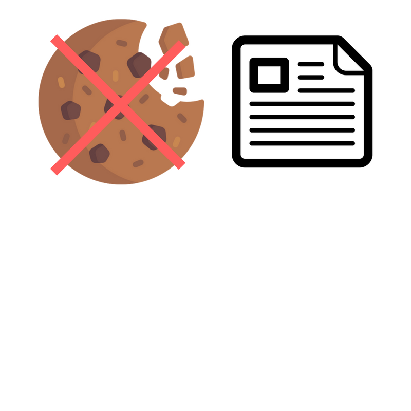
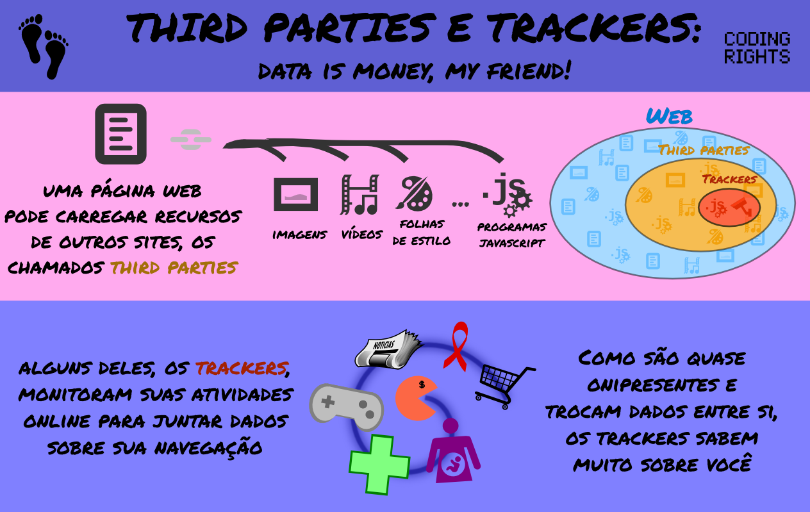
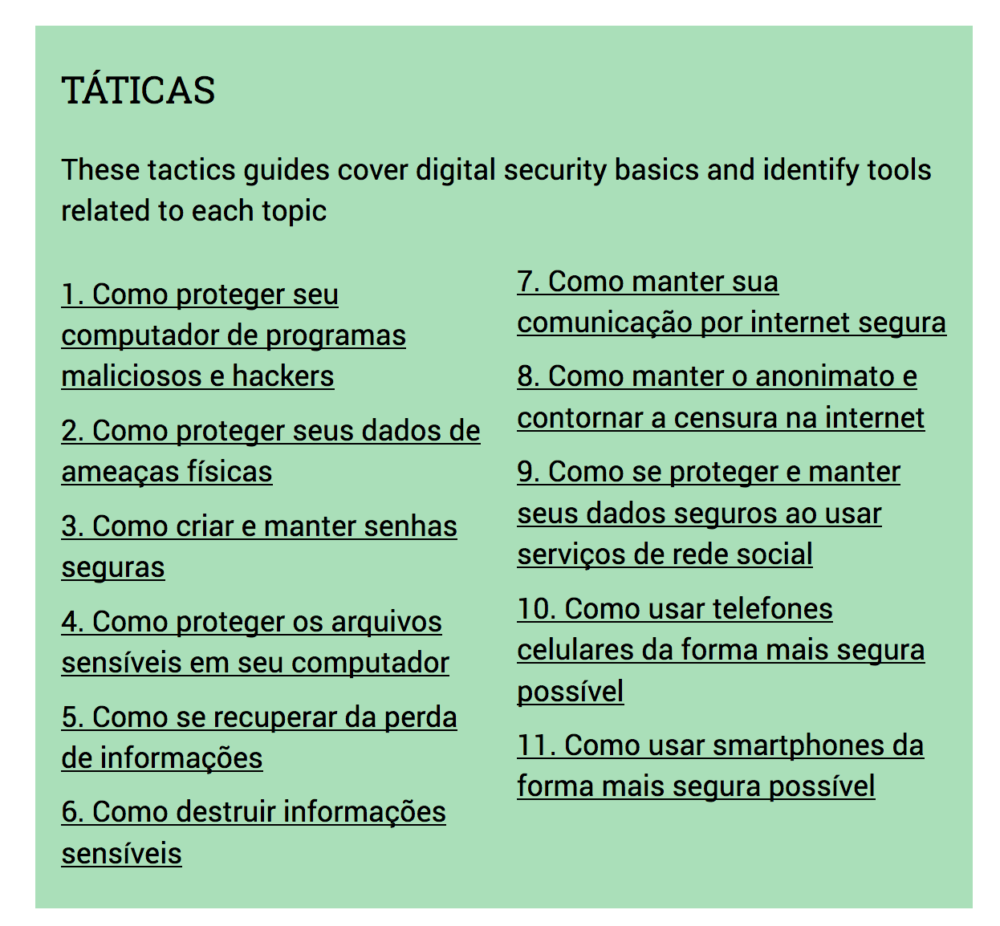

Você é realmente livre na internet?
DADOS
Quantidade de dados que trafegam na rede
Empresas inovadoras
Amigo nerd com teorias da conspiração
AGENDA
- Pessoas e empresas
- Governo
- Futuro
- Estudo de caso
Um dia comum
- Checa suas mensagens
- Olha as redes sociais
- Verifica o e-mail
- Compartilha algo
- Pesquisa passagens e hospedagem
- Pesquisa sobre filmes ou séries novas

Rastreamento
Eses sites coletam nossos dados
... para facilitar a navegação ...
... para mostrar conteúdos e ofertas mais relevantes ...
Uma das formas que eles fazem isso é através
Dos Cookies

Cookies
Eles memorizam informações
... como as suas prefências ...
... ou acompanha suas atividades ...
... muitas vezes através de vários sites ...
Tird Parties
Profiling
Rastreamento + o que compartilhamos = PERFIL
Quem se interessaria por isso?
Existe muita gente interessada!
Analise de dados crescendo em uma velocidade muito grande
Hoje se pode fazer muita coisa com grandes quantidades de dados
“Informações pessoais são o novo petróleo, o combustível vital da nossa economia digital.”
- Andrew Keen
Esses dados podem ser usados para interferir na sua vida offline
Seus dados podem ser vendidos para outras empresas
Conhecer mais detalhadamente a vida das pessoas
Bancos
Seguros
Discriminação
Você não tem nada para esconder?
Não é só sobre você
Perfil populacional
Predizer comportamentos
Manipular opiniões
Tomar decisões em nomes de determinados grupos
O preço do grátis
Como a maioria dos produtos digitais ganha dinheiro?
Modelo de negócio
Abrir mãos dos dados
“Se você não paga pelo produto, o produto é você”
Quase não existe regulamentação
Projeto de Lei nº 5.276/2016
Limites sobre dados guardados e processados
O que fazer a respeito?
Se educar
Ajudar outras pessoas
Tentar reduzir a criação e captura dos seus dados
Usar ferramentas que auxiliem nisso
O Governo

O Governo
Tem muito interesse em ober dados dos cidadãos
São capazes de infingir leis nacionais e internacionais
Poucos investigados, a privacidade de muitos ameaçada
Você está sendo investigado?
Ler suas mensagens
Saber o que você pesquisa
Saber com quem você conversa
Relatório da Electronic Frontier Foundation (EFF)
A América Latina está a frente do resto do mundo
Falhas na implementação
Brasil
4 pontos ameaçam o direito à privacidade
O anônimato é proibido no país
A constituição proíbe expressamente o anonimato
Isso afeta a liberdade de expressão e a privacidade
Grupos minoritários
Perseguições
Falta discussão sobre as consequências
Falta transparência sobre o uso dos dados
Dados coletados por órgãos públicos
Localização
Tempo conectado
Duração das ligações
Guradados por até um ano
O que é feito com eles? Quem pode usa-los?
Podem ser cedidos sem permissão
Lei de organizações criminais
18 mil linhas telefônicas grampeadas por mês
Ausência de normas para regular mensagens criptografadas
Bloqueios no WhatsApp
O governo não se sente confortável com medidas de proteção à privacidade
A "Cultura do Segredo"
Estado e empresas não falam sobre atividades com dados
Não existem relatórios públicos sobre solicitações às empresas
Lei (13.097) autoriza evitar licitações públicas
Tecnologias usadas sem o conhecimento da população
IMSI-catcher
Mensagens, telefonemas e dados de celulares
Revelar a identidade de todos em uma manifestação
Banco de dados secreto do governo de São Paulo
Grava imagens e áudios
Independente de ser suspeito de alguma coisa
Dados divulgados de acordo com interesses da instituição
Ameaça a liberdade
...de Manifestação, expressão e reunião
O que fazer a respeito?
Informação
Cidadãos conscientes
Ferramentas para protejer seus dados
Security in a box
Ferramentas de segurança digital para todas as pessoas
A guerra da internet aberta
A máfia dos ISPs
Internet Server Providers (ISPs)
Um pequeno grupo de empresas controla o mercado
Evitam concorrência
Querem lucrar cada vez mais
Cobrar duplamente pelos serviços
Pagar para usar a internet
Pelo conteúdo
Taxar sites
"Protection money"
Velocidade de acesso ao conteúdo diminuída
Perca de público
Uma ameaça a internet aberta
É de todo mundo e de ninguém
Uma ferramenta de propósito geral
Ninguém pode pagar para ter prioridade
Estimula a competição
Promove a inovação
Propagação de ideias
Impulsiona o empreendedorismo
Neutralidade da rede
Toda informação deve ser tratada igualmente
ISPs são utilitários
Não devem se preocupar com o que passa pela rede
Jardins murados
Locais bonitos e agradáveis
Ao se afastar você se depara com um muro
Na internet
Informação controlada
O usuário só pode ir até certo ponto
Apple store
Muitas restrições
Competir com os interesses da empresa
Se encaixar na visão de mundo corporativo
Se conseguirem transformar a internet em jardins murados
...será uma disputa de quem paga mais...
Pequenos sites não terão chance contra os grandes
O plano
É preciso saber que tipo de dados passa pela rede
Inspecionar os pacotes
Possibilidade de censura
Vitória nos EUA
Vender dados de navegação
Sem precisar de autorização
Brasil
Marco Civil
Franquia de dados na banda larga fixa
Acesso gratuito à determinadas aplicações e serviços
PL 7.182/17
Precisamos ficar alertas!
Será que poderíamos aplicar tudo isso em um exemplo?
Existe alguma empresa que usa toda essa fragilidade dos dados em benefíco próprio?

Sabe mais sobre a humanidade do que qualquer outra empresa ou governo
500 terabytes de informações pessoais todo dia
Não existe outro ser humano que te conheça mais que o facebook
70 curtidas > parentes e amigos
150 curtidas > pais
Interesse de empresas e governos
Venda de dados
Eleições presidencias dos EUA
China
Sofisticada ferramenta de censura
Está em todo lugar
Mais de 1 bilhão de usuários por dia
1/4 do tempo passado na internet
A internet é o facebook
Ser a internet em paises extremamente pobres

Rejeitado na Índia
Maior Jardim murado de todos os tempos
Uma grande ameaça à internet aberta
Algo como o próprio faceook nunca teria nascido nesse ambiente
Monopólio
Concorrência
85% de todo dólar gasto com públicidade
Metáde de todo o tráfego vai para 30 sites
Dados são o ouro do nosso tempo
Privacidade
Segurança
Futuro da internet
Não existe melhor hora para fazer alguma coisa do que agora!